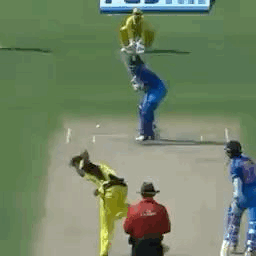
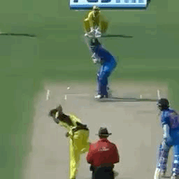

Hi! I'm Anoop Reddy Yeddula
I am currently working towards a Master's in Computer Science at Portland State University, expecting to graduate in June 2024. In my prior role at Hudl as a Data Analyst, I developed strong communication skills and showcased my ability to quickly adapt and continuously learn.
Outside of my professional pursuits, I frequently immerse myself in personal passions such as exploring new destinations, following sports events, and enjoying a variety of movies and series. Yet, one of my most cherished pleasures arises from actively participating in football (soccer), cricket, and badminton—always enthusiastic to hit the field!
Outside of my professional pursuits, I frequently immerse myself in personal passions such as exploring new destinations, following sports events, and enjoying a variety of movies and series. Yet, one of my most cherished pleasures arises from actively participating in football (soccer), cricket, and badminton—always enthusiastic to hit the field!
discover my passions and professional journey!
 
